About Me
Engineer | Researcher | Artist | Geek | ENFJ-T | Learner | Human | Believer | Bengali 🇧🇩
Hey I’m Md. Rezuwan Hassan, an interdisciplinary AI researcher and engineer with a background in Electrical & Electronic Engineering and Computer Science.
My research interests span AI, Natural Language Processing, Speech AI, and Systems Engineering, with a particular interest in AI-assisted MBSE.
I’m interested in building intelligent technologies that can make complex engineering systems more reliable, efficient, and useful to society.
Quick Facts
| Professional title | Sr. Technical Project Manager, SysModeler, Inc. |
| Location | Khilgaon, Dhaka-1219, Bangladesh |
| Education | M.Sc. in Computer Science & Engineering |
| mdrezuwanhassan@gmail.com | |
| Phone / WhatsApp | +8801735066946 |
| Website | https://rezuwan.me |
| Birthday | 20th August |
Professional & academic profiles: Google Scholar · ResearchGate · GitHub · Hugging Face · Kaggle · LinkedIn · Tableau Public
Research Interests
The topics that make me excited to explore, test ideas, and chase answers.
-
 Systems Engineering
Model-based systems engineering, requirements modelling and safety-critical design
Systems Engineering
Model-based systems engineering, requirements modelling and safety-critical design
-
 Computational Cognitive Science
Understanding human cognition through computational models and AI
Computational Cognitive Science
Understanding human cognition through computational models and AI
-
 Human-Computer Interaction
Designing intuitive interfaces and user experiences
Human-Computer Interaction
Designing intuitive interfaces and user experiences
-
 Computational Social Science
Understanding social behaviour through computational models
Computational Social Science
Understanding social behaviour through computational models
-
 Natural Language Processing
Enabling machines to understand and respond to human language
Natural Language Processing
Enabling machines to understand and respond to human language
-
 Generative AI
Creating new content and ideas through AI
Generative AI
Creating new content and ideas through AI
See all research interests and hobbies →
Selected Publications
Work Experience
Over the past few years I've contributed as an AI Engineer, working alongside talented researchers and engineers on AI, software development and systems engineering projects. As our team continues to grow, my role is evolving toward technical leadership and project execution.
SysModeler.ai is a cloud-native platform that uses AI to automate and accelerate Model-Based Systems Engineering (MBSE). It generates all 9 types of standard SysML diagrams by interpreting natural-language descriptions, code snippets from over 20 programming languages, and real-time voice commands — then lets engineers refine them in a drag-and-drop editor. The approach speeds up design, improves collaboration and simplifies documentation, particularly for safety-critical industries.

Responsibilities:
- Develop research protocols, pipelines and methodology
- Process and analyse multiple types of raw data
- Automate research projects and fine-tune deep learning models
- Co-supervise and evaluate undergraduate thesis students
- Perform exam invigilation and lab classes when required
- Bengali speech recognition, diarization and synthesis
- Transliteration and standardisation of Bengali dialects
- Various Bengali text-to-speech projects; speech-to-IPA conversion
- Speech biometric system (voice signature authentication)
- AI-driven agentic agriculture support system
- Bengali humour and cultural roots with agentic AI
- Algorithmic Amnesia: an empirical study of Bengali folklore generation in LLMs
- LLMs for intelligent fault diagnosis and remedial strategy in power transmission systems
- AI-driven insights into microfiber pollution using LLMs for source identification

Lead Academy approached me to design and deliver an NLP course by developing the pre-recorded content for it. I worked there as an instructor on a contractual basis, developing Natural Language Processing (NLP) for Beginners using Python — covering everything from the basics of NLP through deep learning models and existing large language models, with practical Python demonstrations throughout. See teaching →
Education
Thesis: A character gram modeling approach towards Bengali Speech to Text with Regional Dialects Supervisor: Dr. Golam Rabiul Alam Publication: Are ASR foundation models generalized enough to capture features of regional dialects for low-resource languages? Courses: CSE710 Advanced Artificial Intelligence · CSE711 Symbolic Machine Learning · CSE712 Natural Language Processing · CSE713 Synthetic Pattern & Speech Recognition · CSE715 Neural Networks & Fuzzy Systems · CSE799 Data Science
Thesis: Efficient approach for reliability evaluation of the BUS4 distribution system considering momentary interruption Supervisor: Dr. A.S. Nazmul Huda Publication: Monte Carlo Simulation for Reliability Worth Assessment of Distribution System Considering Momentary Interruptions Coursework spanned: electrical circuits and devices, energy conversion, electromagnetic fields and waves, signals and systems, digital electronics, control systems, communication engineering, digital signal processing, data communication, microprocessors and interfacing, VLSI design, digital communications and wireless LAN fundamentals.
Technical Skills
-
🛠️ Programming Languages
Python · JavaScript · Dart · HTML5 · CSS3 · C · LaTeX · Markdown -
🤖 AI/ML Frameworks & Libraries
TensorFlow · PyTorch · Keras · scikit-learn · Hugging Face · OpenAI · Gemini API · LangChain · Fast.AI · Unsloth AI · ONNX -
📊 Data & Retrieval
NumPy · Pandas · SciPy · Plotly · OpenCV · Selenium · LanceDB · Faiss -
🌐 Web & App
Flask · Flutter · Bootstrap · Streamlit · Gradio -
🧰 Developer Tools
Anaconda · Jupyter · Google Colab · Kaggle · Project IDX · VS Code · GitHub · SQLite · OpenRouter -
☁️ Deployment
Netlify · Render · Hugging Face Spaces -
🎨 Other Tools
Tableau · Overleaf · Figma · Roboflow · LabelBox · Photoshop · Illustrator · Premiere Pro -
🤝 Soft Skills
Interpersonal communication · Punctuality · Teamwork · Critical thinking · Time management · Creativity · Problem solving
Highlights
Workshops run, talks given, and competitions judged — at a glance.
Workshop Instructor
- Bangladesh Agricultural University (BAULC)A Hands-on Guide to AI Tools for Non-Technical Workflows · Jun 2026
- Islamic University of Technology (IUTCS)ভাষা-বিচিত্রা — National AI Workshop on Speech Recognition · Mar 2024
- United International University (UIUCCL)NLP Datathon Bootcamp — Workshop Host & Mentor · Feb 2024

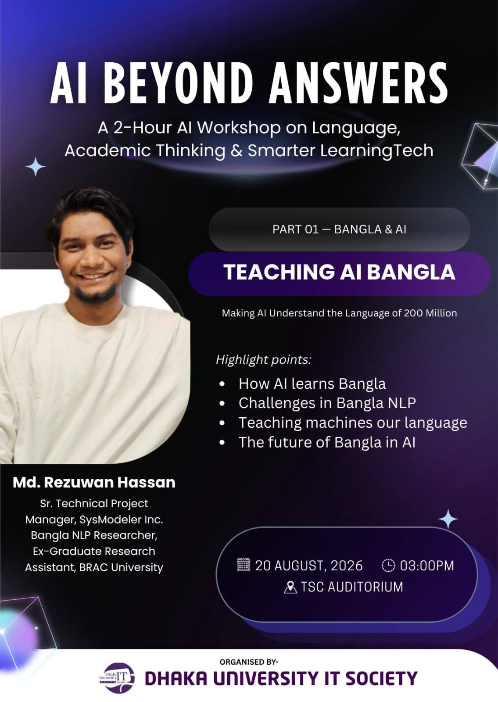


Invited Talks
- BRAC University Computer Club (BUCC)AI Research & Academic Development Webinar · Dec 2023
- Andromeda Space & Robotics Research Organization (CUET)Talk with Researchers — Bengali Language in NLP · Aug 2023
- Ministry of Foreign Affairs, BangladeshOpen-Source Linguistic Initiatives for Bangla — Ministry of Foreign Affairs · Jun 2023
- Tech TopiaAI Symposium — Exploring Bangla NLP with Bengali.AI · May 2023


Judging & Review
- Bangladesh University of Engineering and Technology (BUET), Department of CSEAdjudicator — DLSprint4 · March 2026
- Islamic University of Technology (IUTCS)Adjudicator — Bhashabichitra: ASR for Regional Dialects · April 2024
- United International University (UIU CSE & UIU Computer Club)Adjudicator — Bhashamul: Bengali Text with Regional Dialects to IPA Transcription Modeling · March 2024
- University of Dhaka, IIT Software Engineers' CommunityAdjudicator — Datathon Challenge, Cefalo presents ITverse 2023 · November 2023
- BRAC University Electrical and Electronic Club (BUEEC)Adjudicator — Electroditor (Tech Write-up Contest) · March 2021
- IEEE International Conference on Advanced Computing Technologies (ICACT 2025)Manuscript Reviewer · September 2025
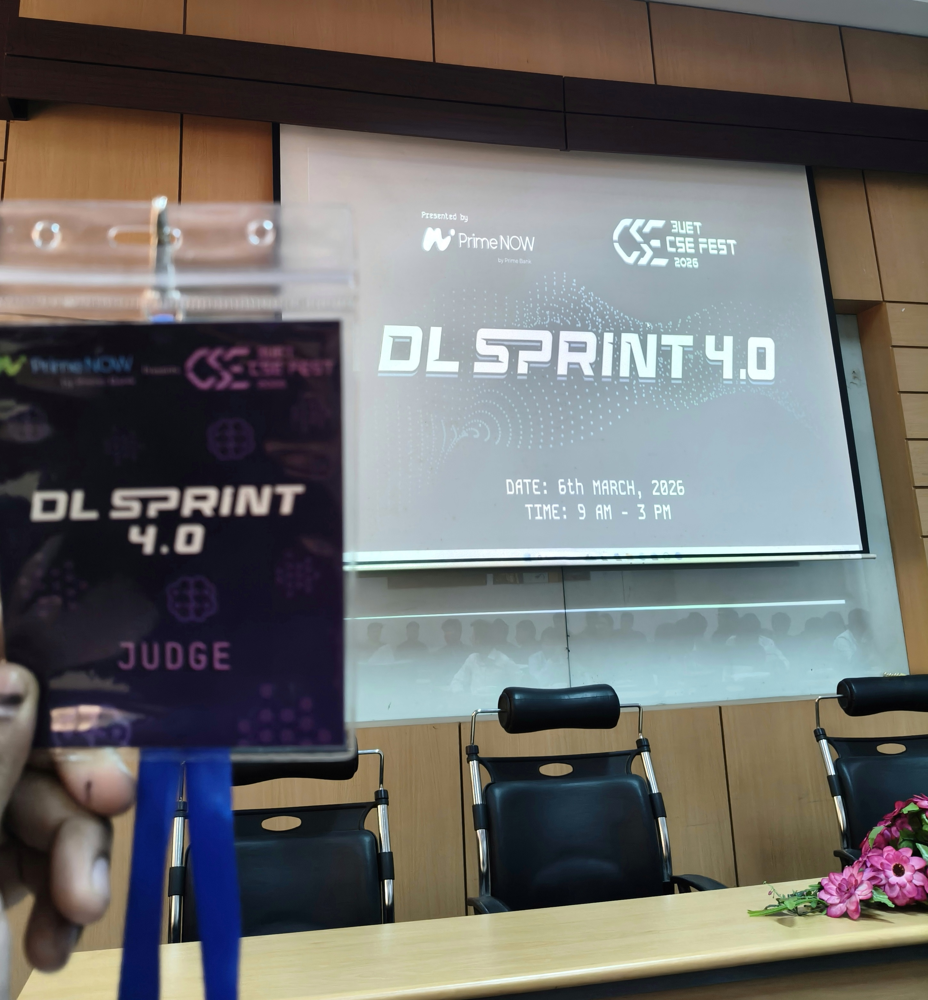
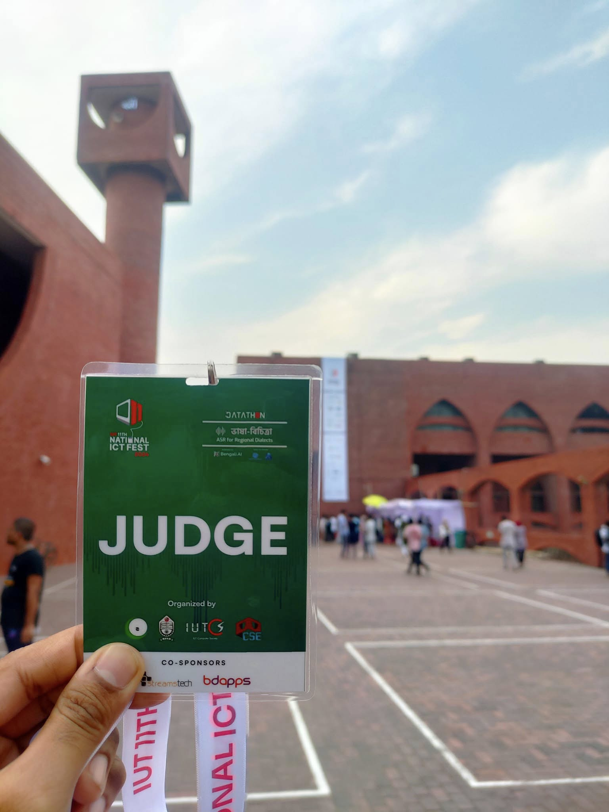
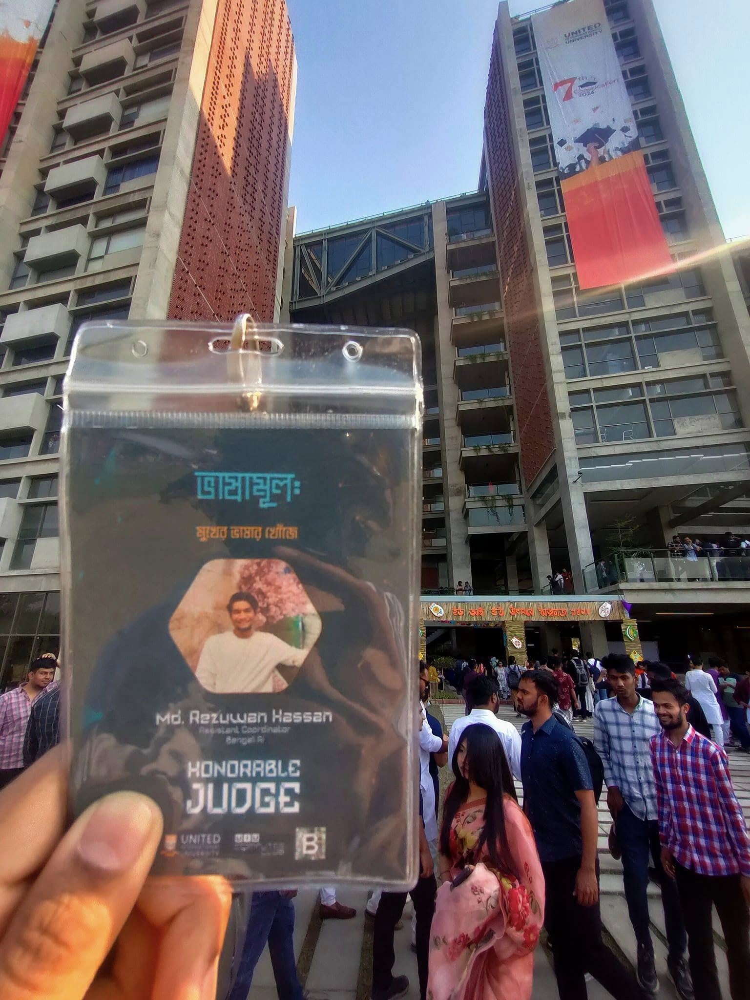
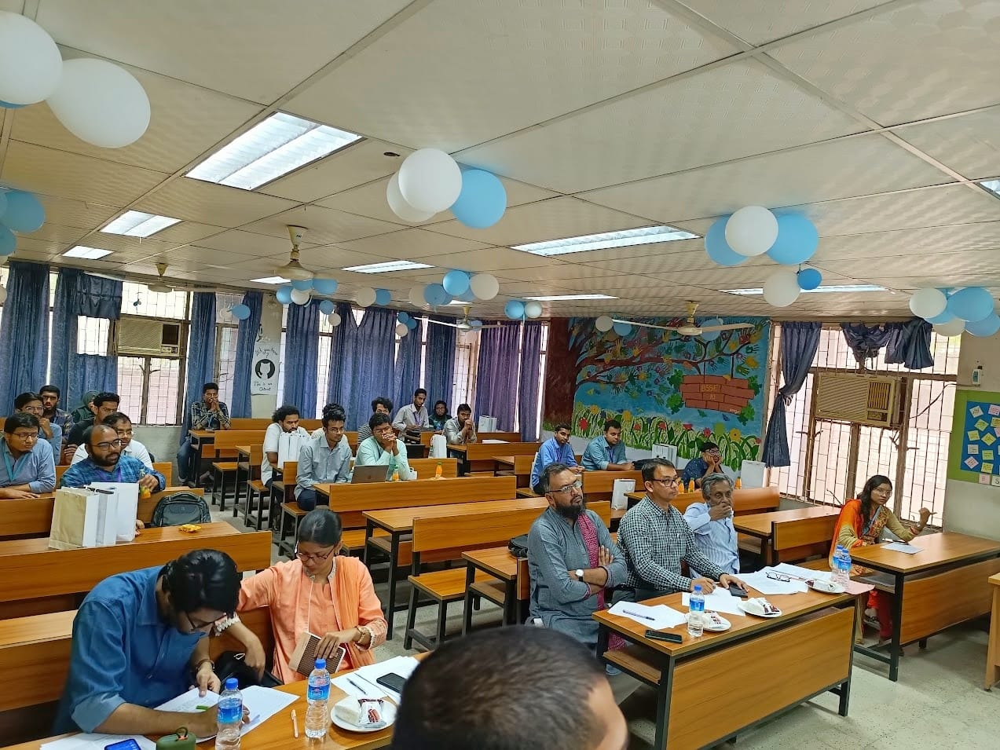
Volunteering
- Bengali.AIAI/ML Researcher & Assistant Co-ordinator · Ongoing
- Quantum FoundationBlood Donor · February 2021 – Present
- Hawai Mithaiyar GanContent Moderator & Musician · January 2019 – December 2020
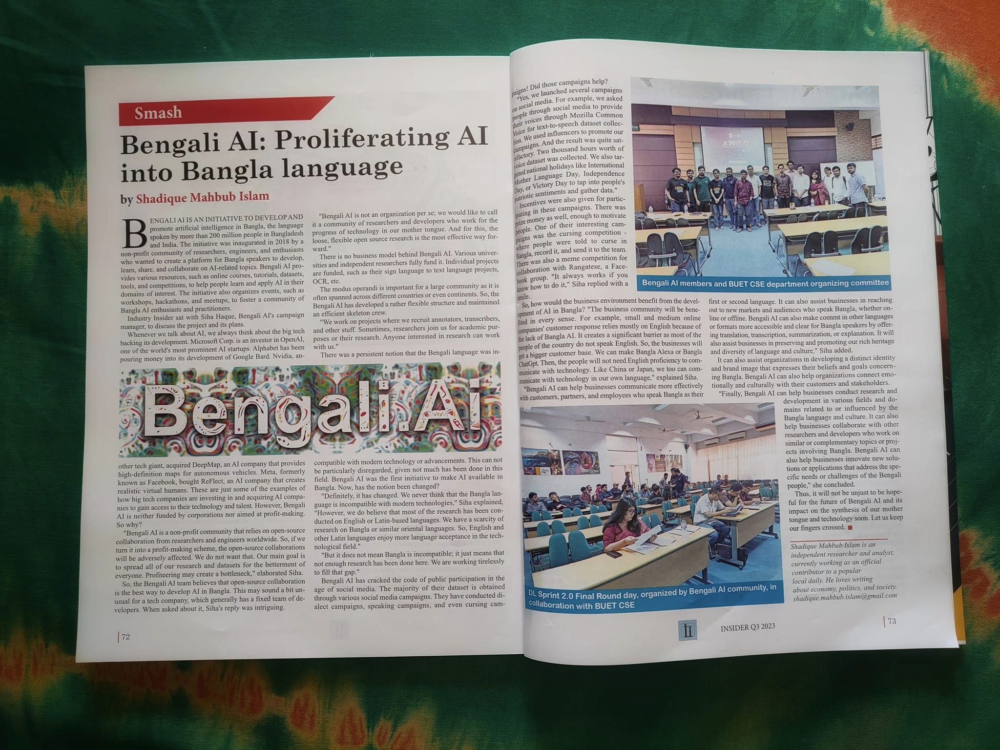
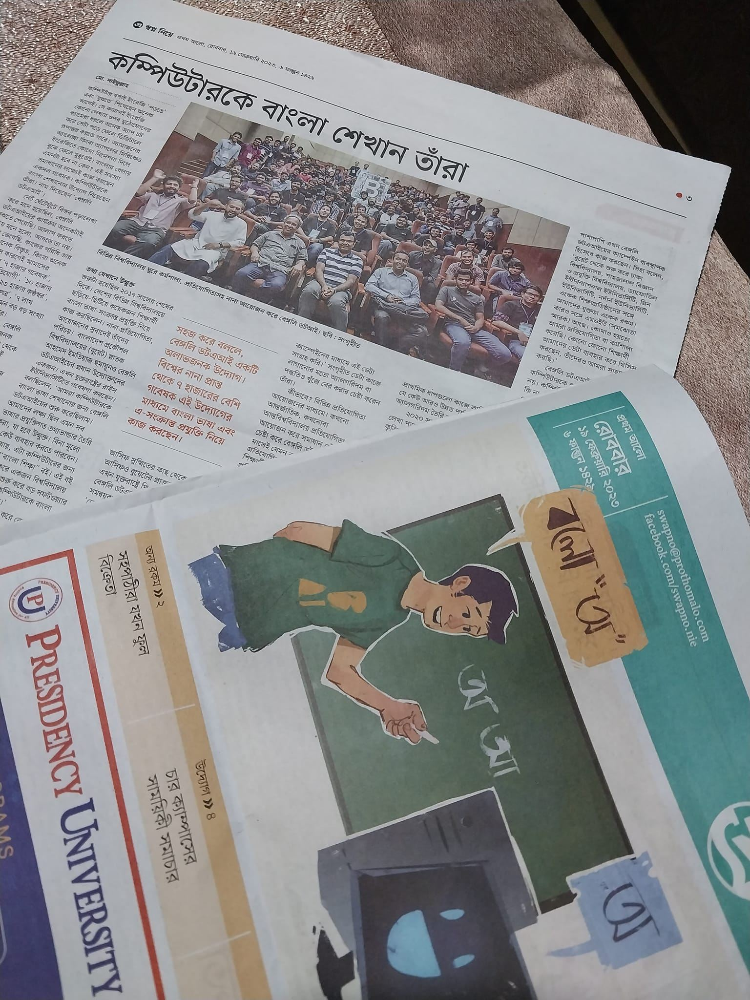
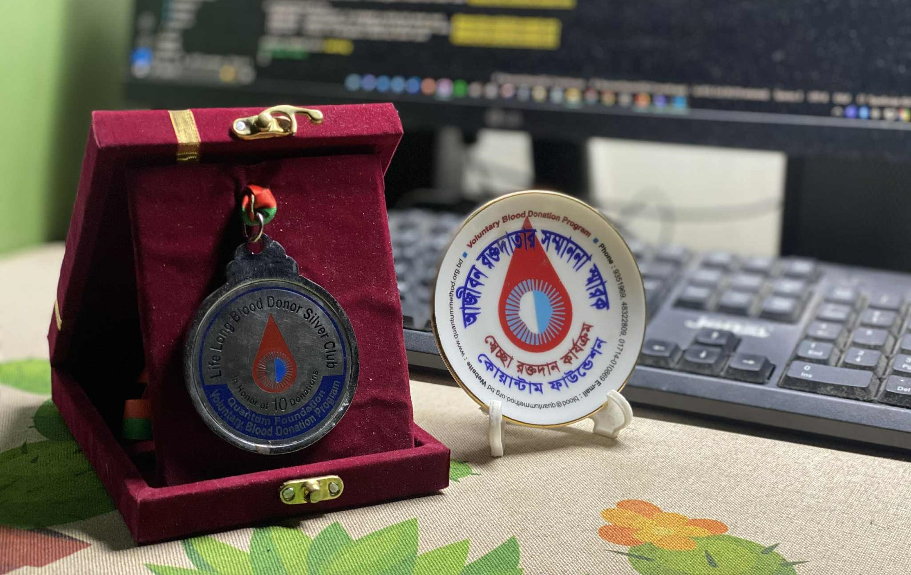
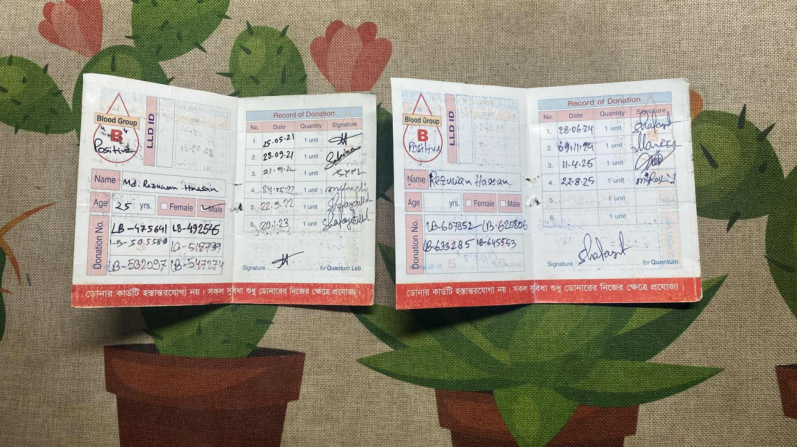
Testimonials
What colleagues, supervisors and teachers have written about working with me.
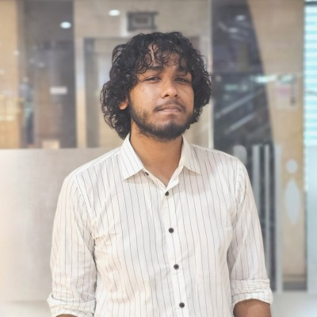
Sabik Aftahee AI Engineer @ SysModeler.ai · Blockchain Olympiad International Merit Awardee · 2x Hackathon WinnerIf I were to name the most vibrant and genuinely inspiring individual I’ve had the privilege of working with, Rezuwan Bhai would undoubtedly be one of the top of that list. In a corporate environment where collaboration often remains formal and transactional, Rezuwan Bhai stands out as someone who effortlessly blends professionalism with warmth. He challenges the notion that coworkers can’t also be friends, bringing not just skills to the table, but empathy, energy, and an authentic human connection. His presence in any team uplifts the entire dynamic. Whether it's solving a problem under pressure or simply creating a positive workspace. I consider myself fortunate that I had such interaction with him since day 1.
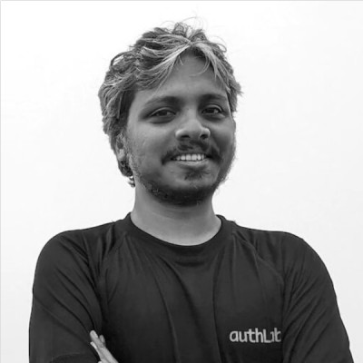
Faizus Saleheen Chief Marketing Officer at WPManageNinja LLCFrom my experience of working with Md. Rezuwan Hassan as his supervisor on a voluntary project a couple of years, I can tell what an exceptional professional he is. The attention to detail Mr. Hassan showed on a voluntary project was surprising. His hunger for perfection never seemed like he was working on a voluntary project, but rather a professional one. He would often go beyond his assigned responsibility and assemble everyone concerned until a campaign was successfully delivered. Even when a campaign is delivered from his end, he would keep following up to make it better. As far as I am concerned, Mr. Hassan sees his job as his solemn duty, and will not stop at anything until it's delivered with the highest possible quality. Such team members are rare to find, and I was honored to have the opportunity to work with him.
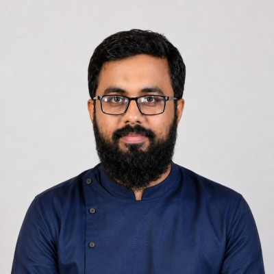
Zaber Mohammad Senior Lecturer at BRAC UniversityI had the pleasure of knowing Mr. Rezuwan, and I can confidently say that he is a dedicated and results-driven professional. He consistently demonstrates an impressive ability to analyze his current situation, quickly adapting and taking the necessary steps to move forward. Even when the circumstances aren't in his favor or outside of his comfort zone, Rezuwan remains focused and determined to achieve the desired outcome. His strong work ethic and integrity make him an invaluable team member. Moreover, he is skilled at delivering measurable, quantitative results that contribute significantly to any project he is involved in. I highly recommend Mr. Rezuwan for any role that requires a combination of strategic thinking, persistence, and a commitment to excellence.
All recommendations on LinkedIn →
Elsewhere on This Site
- Publications — papers, preprints and theses, with live Google Scholar metrics
- Projects — machine learning, data science and open-source projects
- Talks — invited talks, panels and webinars
- Teaching — courses designed and delivered, students supervised, and workshops instructed
- Adjudications — competitions judged and manuscripts reviewed
- Awards & Achievements — competition results, certifications and honours
- Volunteering — community service
- Interests & Hobbies — research interests, hobbies and other platforms
Personal Philosophy
Core belief: "Never memorize what you can look up in books." Einstein's quote is a cornerstone of my learning philosophy — I remember the process, not the syntax. Even as a daily Pandas user I look things up as needed rather than overloading my memory with syntax.
Learning style: A heuristic learner who believes in hands-on experimentation and practical application.
Mission: Making people's lives easier by developing open-source technologies, advancing Bangla NLP research, and building better, more reliable engineering systems.